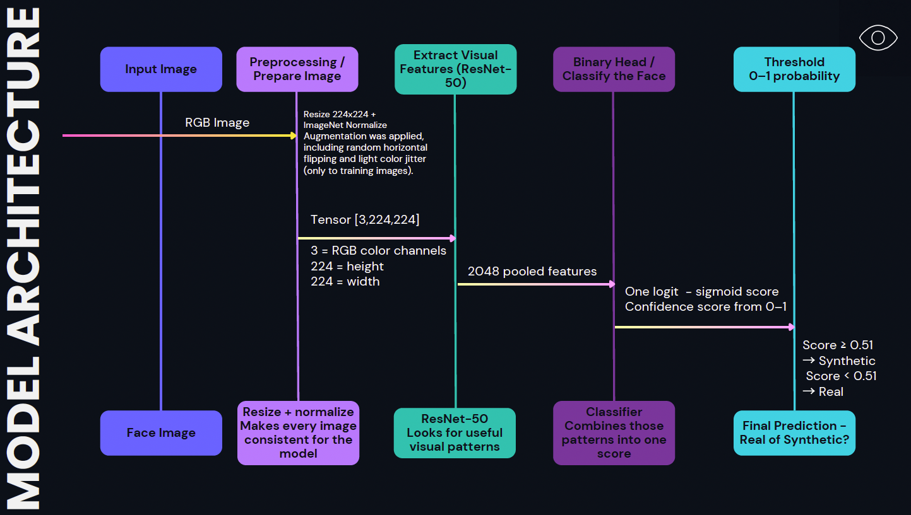
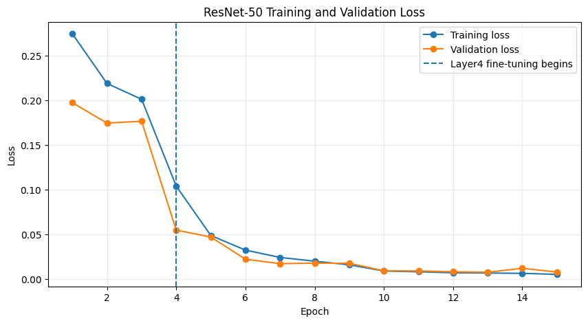
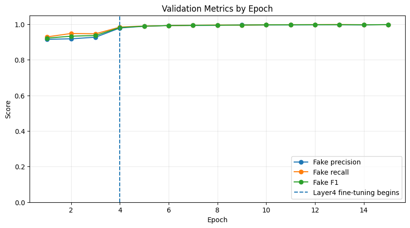

Model Architecture · Training Strategy
One reproducible
ResNet-50 pipeline.
The project narrowed from multiple model ideas to a controlled transfer-learning workflow: standardized image preparation, a pretrained ResNet-50 backbone, a binary classifier head, validation-only model selection, and one final locked-test evaluation.
INPUT AND OUTPUT
From face image to screening prediction.
Each image is converted to RGB, resized to 224 × 224 pixels, and normalized before entering ResNet-50. The network produces 2,048 pooled visual features, which the binary classifier converts into a probability score. Scores at or above 0.51 are classified as synthetic.

140k Real and Fake Faces
Balanced real and synthetic images with separate roles for training, validation, and test.
The benchmark pairs real FFHQ faces with StyleGAN-generated faces. The official split uses 100,000 training images, 20,000 validation images, and a 20,000-image held-out test set.
Transfer learning
ResNet-50 extracts visual features; a binary head turns them into one synthetic score.
Each face is converted to RGB, resized to 224 × 224, and normalized with ImageNet-compatible values. ResNet-50 produces a 2,048-feature representation before the task-specific head.
Input imageRGB · 224 × 224
→
ResNet-502,048 pooled features
→
Linear2048 → 256
→
BN + ReLUDropout 0.30
→
Sigmoid scoresynthetic if score ≥ 0.51
Two-stage fine-tuning
Start with general visual knowledge, then adapt the deepest features.
Training ran for up to 15 epochs. Epochs 1–3 trained only the new classifier head. Beginning at epoch 4, ResNet layer4 was unfrozen so higher-level features could adapt to the real-vs.-synthetic task.
Epochs 1–3
Train the head
Keep the ResNet-50 backbone frozen. Train the task-specific head at a 5×10⁻⁴ learning rate.
Epochs 4–15
Unfreeze layer4
Fine-tune the deepest ResNet block at 1×10⁻⁵ while continuing to train the classifier head.
Checkpoint
Select epoch 13
The final checkpoint was selected from validation performance; epoch 13 also corresponded to the lowest validation loss shown in the final presentation.
Decision rule
Use threshold 0.51
The threshold was chosen on validation data to maximize Synthetic/Fake F1 before final test evaluation.
Training behavior
Fine-tuning layer4 produced the sharpest drop in loss.
Light augmentation—random horizontal flipping and small color jitter—was applied only to training images. Validation and test preprocessing stayed deterministic.


Evaluation discipline
The test set answers the final question; it does not steer development.
Training data taught the model. Validation data guided checkpoint and threshold choices. The locked 20,000-image test split was evaluated once after those decisions were complete, reducing the risk of tuning to the final score.